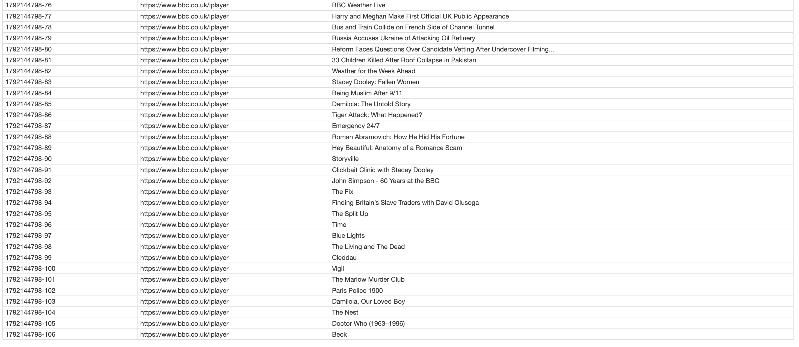

My Digital Media Learning Journey
weekly reflections
week1 & week2
Theme: From CampusPress to HTML/CSS to GitHub Pages
Task Review: What I Did and How It Went
The goal of this workshop was to start creating content and publishing it online, laying the foundation for a personal portfolio that I will keep updating. In class, we engaged with three different website-building practices:
a. Using a content management system: I activated and familiarised myself with the University of Leeds’ CampusPress site.
b. Building web pages with code: I downloaded VS Code, a code editor, and used it to write my HTML and CSS files.
c. Hosting and publishing publicly: I created a GitHub account, uploaded the code to GitHub and made it publicly accessible through GitHub Pages.
CampusPress is a ready-made platform that allows users to choose a template, customise the design and add content without writing any code. HTML/CSS, by contrast, required me to write the code myself, which gave me full control over everything from layout to responsive design. It is highly flexible. GitHub Pages was the most “magical” step. I created a repository, uploaded index.html and stylesheet.css, enabled Pages in the settings, and a public link was generated. I think of it as a “bridge” between my local files and the public web.
Connections and Revelations
a.Week 1:Introducing Digital Practices
Drawing on the lecture and readings, Baym (2010) argues against technological determinism: the meaning of new media is not determined by the technology itself but is assigned by people through use.Through everyday interaction, social norms and cultural context, people integrate technology into their lives.
This made me realise that building a website should involve considering user habits, community atmosphere and meaning-making. Therefore, when designing my personal site, I should think about the connections and communication it will create with others, rather than focusing on the technology alone.
Social media platforms are programmable architectures that organise user interactions and monetise user data, and they rely on algorithms and interfaces to decide what we see, what gets recommended and what gets hidden.
b.Week 2:Understanding Digital Media
This week’s lecture and readings looked at the shift from networks to platforms, and at how algorithms shape what we see online.
On social platforms, algorithms and default interfaces decide how my content is shown. However, when building my own website, I decide the page structure, sequence and key points myself. This difference clearly shows how many decisions a platform makes for us, as the workshop showed in the contrast between CampusPress and VS Code.
week3: Web Scraping
This week’s workshop introduced us to web scraping. We explored two approaches: WebScraper.io, which runs directly in the browser and which I chose to use, and scraping with the Python programming language, which is more flexible. In class, we practised the process of scraping data.
To be honest, it felt quite complex. It is difficult to understand exactly how every step works, and why, in just a two-hour session, at least for me. After class, I reviewed the process on my own, starting again from the very beginning and going step by step, to scrape the data and understand how the whole process operates. Here is the data I scraped:

At first, I ran into a problem: I could not scrape the data I actually wanted, which was the individual titles of the shows listed across the page. After several attempts, I was still getting only a very small amount of data. (I forgot to take a screenshot at this stage.) After trying a few more times, I realised that to scrape all the titles on a page, I needed to select across rows. After selecting the first piece of data I wanted, I had to select the same type of data on another row before I could retrieve all the titles.
This made me realise that scraping is not purely a technical task. I had to understand the underlying logic of how it works, and, more importantly, think carefully about what I needed, why I needed it and how I would use the data. This is why understanding HTML and CSS matters: I need to know what the code represents. Beyond technical knowledge, theory and ethics are also important, because they shape how the data I collect will be used.
After these two workshops, I feel better able to think about how web pages operate from a developer’s or technician’s perspective. This is an area I had never really encountered before, as I had only been a user of digital media. I am looking forward to next week’s workshop.